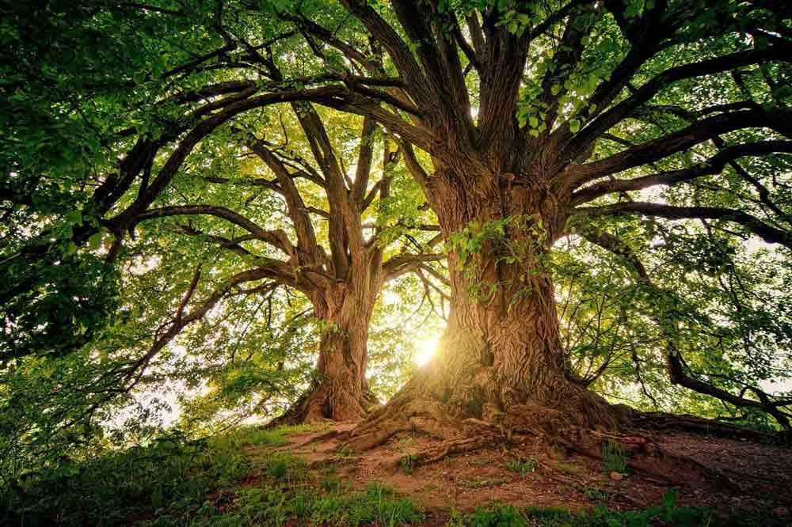
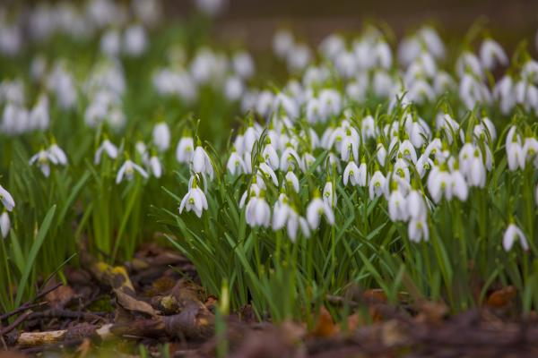

Los árboles

Estas plantas tienen un tallo leñoso con una altura superior a los 6 metros que produce ramas todo el año. En este tipo de plantas el tallo es llamado tronco, el cual se ramifica a cierta altura del suelo. Además, sus ramas también son duras y nacen en la parte alta de los árboles. br
Ejemplos de árboles: el sauce, el olivo, el pino, el roble, etc.
Herbáceas

En este grupo se encuentran las plantas cuyos tallos no llegan a conformarse como una estructura solida o de tipo leñoso. Por lo que su consistencia es mucho más blanda por lo general. Estas pueden ser ramificadas o no ramificadas. Generalmente su duración es corta, pero gracias a esto son plantas con una adaptación superior al clima. De ahí que sean las más extendidas por la superficie del planeta.
Arbustos

Son plantas leñosas, generalmente de tipo perenne, que cuentas con raíces múltiples y una altura superior a la de las matas llegando a alcanzar cerca de los tres metros de altura. A diferencia de los árboles, los arbustos ramifican directamente desde la base.